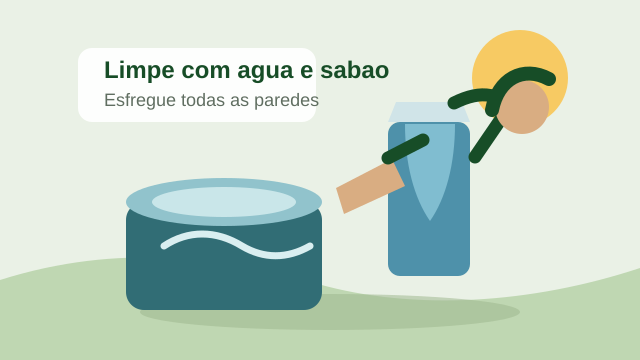
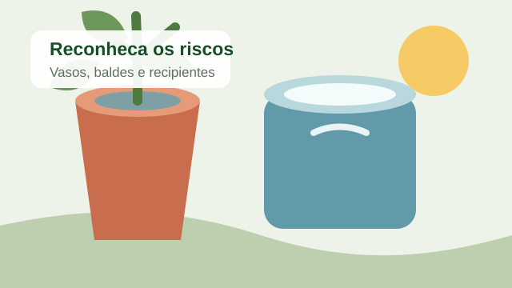
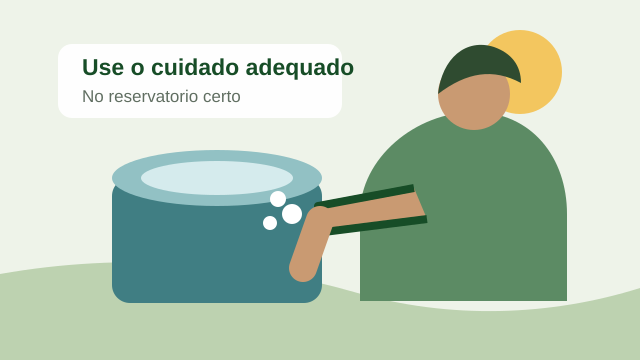
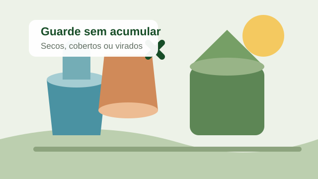

Limpeza de recipientes
Baldes, vasos, garrafas e outros locais de acúmulo.

Vídeo orientativo
Cuidados no dia a dia

Reconheça os locais de acúmulo.

Use o cuidado adequado ao recipiente.

Guarde sem acumular água.
Dúvidas frequentes
Elimine a água e limpe o recipiente, se for seguro. Se não puder cuidar do local, peça apoio à equipe.
Não. Ovos podem ficar nas paredes. Esfregue as superfícies do recipiente com água e sabão.
Faça uma revisão semanal e observe novamente depois de chuvas.
Não. Reservatórios de água para consumo exigem orientação específica. Não improvise misturas.
Guarde secos, cobertos ou virados para baixo, em local protegido da chuva.
Quando não conseguir resolver com segurança ou precisar de avaliação da equipe.